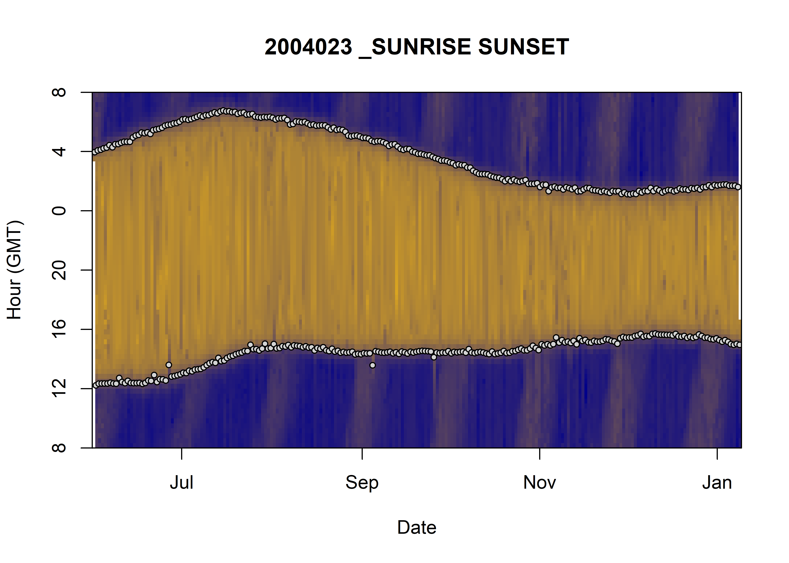

Detect phases of the day
Joffrey JOUMAA
January 13, 2022
phase_of_the_day.RmdWe’ll like to find something similar to what was done for the individual 2004023, that is to say find the different phase of the day: day and night, by identifying the sunrise and the sunset. For that we’ll try the function previously used in 2004023 and apply it to 2018 individuals. Then we’ll try other methods and decide which method fit the most our needs. Our ultimate goal is to be able to plot this kind of figure:

Display the data of 2018-individuals
Let’s first load our package and our data.
# load library
library(weanlingNES)
# load data
data("data_nes", package = "weanlingNES")
# combine all individuals
data_2018 = rbindlist(data_nes$year_2018, use.name = TRUE, idcol = TRUE)
# remove phase column for the purpose of this document
data_2018[, phase := NULL]To visualize the data, we summarize each point on the plot as the median of the light level during one hour of one day.
# let's first average `lightatsurf` by individuals, day since departure and hour
dataPlot = data_2018[,.(lightatsurf = median(lightatsurf)),
by=.(.id,day_departure,date = as.Date(date),hour)]
# display the result
ggplot(dataPlot, aes(x = day_departure, y = hour, fill = lightatsurf)) +
geom_tile() +
facet_grid(.id ~ .)+
theme_jjo() +
labs(x = "# of days since departure", y = "Hour", fill = "Light level at the surface") +
theme(legend.position = c("bottom"))Visualization of light level at the surface along 2018-individuals’ trip
Why is there so much data with missing value during day time?
Well, the good news is that we can clearly see the same pattern we saw in 2004023. Let’s look at the distribution
# display the result
ggplot(dataPlot, aes(x = lightatsurf, fill = .id)) +
geom_histogram(show.legend = FALSE) +
geom_vline(xintercept = 110, linetype = "longdash") +
facet_wrap(.id ~ .)+
theme_jjo()
Distribution of lightatsurf with a threshold at 110.
There is a bimodal distribution for each individual that seems to be quite well separated by a threshold at 110, which correspond to the threshold that has been used for the individual 2004023. In 2018 individuals, 110 seems also to be an appropriate value.
Let’s give a try to the findTwilights function
Let’s first reshape our data to complied with the findTwilights function.
# identification of sunset, sunrise pairs
res_twi = data_2018[!is.na(lightatsurf),
findTwilights(.(Date = date, Light = lightatsurf),
threshold = 110, include=date), by=.id]
# add `day_departure` to res_twi using a rolling join
# https://www.r-bloggers.com/2016/06/understanding-data-table-rolling-joins/
res_twi = data_2018[,.(.id, Twilight = date, day_departure)
][res_twi, roll=T, on = c(".id","Twilight")]
# hour column
res_twi[, hour := hour(Twilight)]
# display the result
ggplot() +
geom_tile(data = dataPlot, aes(x = day_departure, y = hour, fill = lightatsurf)) +
geom_point(data = res_twi, aes(x = day_departure, y = hour, col = Rise)) +
facet_grid(.id ~ .)+
theme_jjo() +
labs(x = "# of days since departure",
y = "Hour",
fill = "Light level at the surface",
col = "Sunrise") +
theme(legend.position = c("bottom"))Visualization of light level at the surface along 2018-individuals’ trip, with twilight detection points
Not bad actually! But there are many outliers that need to be addressed. Let’s try to only keep the pair Rise (TRUE, FALSE) that has the longer period of time of the day.
# calculate the period of time between a sunrise and a sunset (i.e. two consecutive rows)
res_twi[, period_time := c(0,as.numeric(diff(Twilight,units="hours"), units="mins")),
by= .(.id, as.Date(Twilight))]
# keep only the longer period of time and the row just before
res_twi_inter = res_twi[c(
# index of row with the longer period of time
res_twi[, .I[period_time==max(period_time)], by=.(.id, as.Date(Twilight))]$V1,
# index of the row previous the one with the longer period of time
res_twi[, .I[period_time==max(period_time)], by=.(.id, as.Date(Twilight))]$V1-1)
# reorder by date
][order(Twilight)]
# display the result
ggplot() +
geom_tile(data = dataPlot, aes(x = day_departure, y = hour, fill = lightatsurf)) +
geom_point(data = res_twi_inter, aes(x = day_departure, y = hour, col = Rise)) +
facet_grid(.id ~ .)+
theme_jjo() +
labs(x = "# of days since departure",
y = "Hour",
fill = "Light level at the surface",
col = "Sunrise") +
theme(legend.position = c("bottom"))Visualization of light level at the surface along 2018-individuals’ trip, with twilight detection points corrected
That’s definitely better, but there are few remaining outliers (especially for the individual ind_2018074). Let’s zoom in the first days since departure for this individual, to see what’s going on.
# display the result
ggplot() +
geom_tile(data = dataPlot[.id == "ind_2018074" & day_departure < 100,], aes(x = day_departure, y = hour, fill = lightatsurf)) +
geom_point(data = res_twi_inter[.id == "ind_2018074" & day_departure < 100], aes(x = day_departure, y = hour, col = Rise)) +
theme_jjo() +
labs(x = "# of days since departure",
y = "Hour",
fill = "Light level at the surface",
col = "Sunrise") +
theme(legend.position = c("top"))
Visualization of light level at the surface for the first 100 days of ind_2018074, with twilight detection points corrected
As we can see, some low light levels are encountered in the middle of daytime that mislead the findTwilight function in finding the sunrise or the sunset. Two ways could be explored to deal with these outliers:
Since some of the outliers observed Figure @ref(fig:zoom_2010074) are during daytime, it means that period_time should be longer than usual for these days. Considering this, we could impose condition on this variable to make sure it is neither too long either too short.
# display
ggplot(res_twi_inter, aes(x=period_time, fill=.id)) +
geom_histogram() +
facet_grid(.id~.) +
theme_jjo()Distributions of the time difference between two rows identified as sunrise and sunset
Considering this graph, let’s try to keep rows where period_time==0 or 300<period_time<900
# remove outlier (but keep the 0)
res_twi_out = res_twi[period_time==0 | period_time %between% c(300,900)]
# keep only the longer period of time and the row just before
res_twi_out_inter = res_twi_out[c(
# index of row with the longer period of time
res_twi_out[, .I[period_time==max(period_time)], by=.(.id, as.Date(Twilight))]$V1,
# index of the row previous the one with the longer period of time
res_twi_out[, .I[period_time==max(period_time)], by=.(.id, as.Date(Twilight))]$V1-1)
# reorder by date
][order(Twilight)]
# display the result
ggplot() +
geom_tile(data = dataPlot, aes(x = day_departure, y = hour, fill = lightatsurf)) +
geom_point(data = res_twi_out_inter, aes(x = day_departure, y = hour, col = Rise)) +
facet_grid(.id ~ .)+
theme_jjo() +
labs(x = "# of days since departure",
y = "Hour",
fill = "Light level at the surface",
col = "Sunrise") +
theme(legend.position = c("bottom"))Visualization of light level at the surface along 2018-individuals’ trip, with twilight detection points corrected
This does not work! If several sunset and sunrise are identified within a day, the current algorithm will only calculates
period_timebetween two successive rows, whereas we should test every possible combination.
Since those points are due to outliers during the day, we could try to smooth the light level signal and run the findTwilight function on it.
# # let's first split our dataset by individual
# split_inter = split(data_2018, data_2018$.id)
#
# # create a times series of ligth level
# split_inter = lapply(split_inter, function(x) {
# # summerize data at the min level
# df = x[,.(lightatsurf = median(lightatsurf, na.rm=T)), by=.(date = floor_date(date, unit="min"))]
# # creation of a time series
# z = as.ts(zoo(df$lightatsurf, df$date))
# # smoother creation
# # https://boostedml.com/2020/05/an-introduction-to-time-series-smoothing-in-r.html
# s = ksmooth(time(z),as.numeric(z),'normal',bandwidth=6)
# # retrieve smooth value
# x[, lightatsurf_smooth := s$y]
# })
#
# # unlist
# data_2018 = rbindlist(split_inter)So far, I have not been successful using this method cause it seems quite tricky to smooth a signal with a lot of missing values.
Let’s try a clustering method
Since we can visually see where is the day and night time, we should try clustering method.
K-MEANS + Hierarchical clustering
Here we test a package well-known to perform clustering FactoMineR. The idea behind its main method is to performed a hierarchical clustering where the initial centroids are positioned based on a pre-performed k-means using the first component of a PCA. For more information feel free to have a look at their website.
# remove nan value
df_clust = dataPlot[!is.na(lightatsurf),.(hour,day_departure,lightatsurf)]
# HCPC with onlys 2 groups
res_hcpc = FactoMineR::HCPC(df_clust, nb.clust = 2, graph = FALSE)
# display the result
ggplot() +
geom_tile(data = dataPlot[!is.na(lightatsurf),
][,cluster:=res_hcpc$data.clust$clust],
aes(x = day_departure, y = hour, fill = factor(cluster))) +
theme_jjo() +
facet_grid(.id ~ .)+
labs(x = "# of days since departure",
y = "Hour",
fill = "cluster",
col = "Sunrise") +
theme(legend.position = c("bottom"))Visualization of the moment where the light was measured at the surface colored with the associated cluster (HCPC)
Well, clearly this algorithm is not suited to deal with this kind of patterns!
DBSCAN
DBSCAN seems to be an elegant algorithm to deal with outliers and non-convex cluster. The only issue is that we have to choose the right value for its two parameters:
- Reachability distance
- Reachability minimum number of points
Which might be tricky!
# determine the right values by testing several of them...
res_dbscan = dbscan(df_clust,
eps = 45,
MinPts = nrow(dataPlot) * 0.06,
method = "raw")
# display the result
ggplot() +
geom_tile(data = dataPlot[!is.na(lightatsurf),
][,cluster:=res_dbscan$cluster],
aes(x = day_departure, y = hour, fill = factor(cluster))) +
theme_jjo() +
facet_grid(.id ~ .)+
labs(x = "# of days since departure",
y = "Hour",
fill = "cluster",
col = "Sunrise") +
theme(legend.position = c("bottom"))
Visualization of the moment where the light was measured at the surface colored with the associated cluster (DBSCAN, eps=45, MinPts=nrow(dataPlot)*0.06)
Well that’s quite nice :) There are still few outliers (especially for individual ind_201874) identify as cluster 1 whereas we would like to see them in cluster 2. Let’s try using other parameters.
# let's try other parameters
res_dbscan = dbscan(df_clust,
eps = 8,
MinPts = nrow(dataPlot)*0.001,
method = "raw")
# display the result
ggplot() +
geom_tile(data = dataPlot[!is.na(lightatsurf),
][,cluster:=res_dbscan$cluster],
aes(x = day_departure, y = hour, fill = factor(cluster))) +
theme_jjo() +
facet_grid(.id ~ .)+
labs(x = "# of days since departure",
y = "Hour",
fill = "cluster",
col = "Sunrise") +
theme(legend.position = c("bottom"))
Visualization of the moment where the light was measured at the surface colored with the associated cluster (DBSCAN, eps=8, MinPts=nrow(dataPlot)*0.0001)
Here, the algorithm find several clusters, but it is the cluster 1 that has our attention. It seems better defined than the previous figure @ref(fig:dbscan_first_test), but there are still few rows (for ind_2018074) that have been mislabelled.
# display the result
ggplot() +
geom_tile(data = dataPlot[!is.na(lightatsurf),
][,cluster:=res_dbscan$cluster
][,cluster:=fifelse(cluster==1,1,2)],
aes(x = day_departure, y = hour, fill = factor(cluster))) +
theme_jjo() +
facet_grid(.id ~ .)+
labs(x = "# of days since departure",
y = "Hour",
fill = "cluster",
col = "Sunrise") +
theme(legend.position = c("bottom"))
Same as above, but cluster 1 = cluster 1, cluster 2 = all the others
Conclusion
For now we will used the result from the DBSCAN algorithm, since results seem to be better!
# referential creation
ref_phase_day = dataPlot[!is.na(lightatsurf),
][, cluster := res_dbscan$cluster
][, cluster := fifelse(cluster == 1, "night", "day")][]
# reshape
ref_phase_day = melt(ref_phase_day,
id.vars = c(".id","date","hour"),
measure.vars = "cluster",
value.name = "phase")
# set date format
ref_phase_day[, `:=` (date = date + hours(hour),
hour = NULL,
variable = NULL)]
# rolling join
data_2018 = ref_phase_day[data_2018, roll=T, on = .(.id, date)]WIP
We could also try to define two other phases of the day:
- sunset: plus or minus 30 min from the transition night to day
- sunrise: plus or minus 30 min from the transition day to night
# identification of transition
ref_phase_day[,transition := c(1,abs(diff(as.numeric(as.factor(phase)))))]
# keep only the first date and the last date (i.e transition) by date and individual
ref_phase_day = ref_phase_day[transition==1, .SD[c(1,.N)], by=.(.id,date)]
# convert date to take into account hour
ref_phase_day[, date:=date+hours(hour)]
# add sunset
test = rbind(ref_phase_day[,.SD,.SDcols = -c("transition")][, date:= date+minutes(30)],
ref_phase_day[,.SD,.SDcols = -c("transition")][phase=="night",][, date := date - minutes(30)][,phase:="sunset"],
ref_phase_day[,.SD,.SDcols = -c("transition")][phase=="day",][, date := date - minutes(30)][,phase:="sunrise"])Problem, when there are no day times found during several days, there all marked as night!